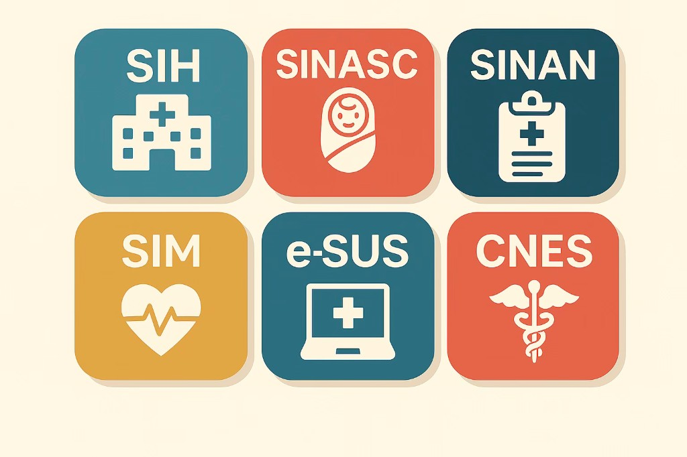

Módulo 3 | Aula 5
Acesso aos dados de Saúde
Introdução
O Brasil dispõe de um amplo e valioso acervo de dados sobre agravos à saúde, disponibilizado há mais de 30 anos. Ao longo desse período, a forma de disponibilização evoluiu continuamente, acompanhando os avanços tecnológicos e as mudanças nos processos e procedimentos (Duarte et al., 2018). Esse acervo é sustentado por um conjunto estratégico e integrado de ferramentas e processos tecnológicos, coordenados principalmente pelo Ministério da Saúde por meio do Departamento de Informática do SUS (DATASUS).
As funções primordiais dos sistemas de informação em saúde são coleta, processamento, análise e disseminação de dados de saúde em todo o território nacional, com o objetivo de subsidiar a gestão do Sistema Único de Saúde (SUS) e a tomada de decisões baseadas em evidências.
Como você já viu, os Sistemas de Informação em Saúde são a base do planejamento em saúde, e permitem:
Diagnóstico da situação de saúde: ajudando a entender o perfil epidemiológico da população, identificando doenças prevalentes, taxas de mortalidade e natalidade em diferentes regiões do país.
Gestão e planejamento: fornecendo indicadores de eficiência e eficácia para gestores municipais, estaduais e federais, orientando a alocação de recursos financeiros e humanos e a formulação de políticas públicas.
Vigilância Epidemiológica: monitorando as doenças de notificação compulsória, auxiliando na detecção de surtos e no planejamento de ações de prevenção e controle, como observado durante as epidemias e especialmente durante a pandemia de covid-19.
Nesta disciplina foram apresentados os principais sistemas de informação, mas existe um ecossistema envolvendo mais de 200 sistemas efetivamente sob responsabilidade do DATASUS/SEIDIGI (Secretaria de Informação e Saúde Digital). Quer conhecer todos eles? Clique aqui!

Os dados que podemos coletar nesses sistemas juntamente com outras bases de dados socioeconômicos e ambientais são os principais insumos para a construção de indicadores de saúde. Calcular indicadores de saúde é essencial porque eles transformam dados coletados em informações úteis para a tomada de decisão (Franco, 2012). Os principais objetivos para calcular esses indicadores são (Opas, 2018):
Clique em cada card para ver o texto completo.
Monitorar a situação de saúde da população – Permite acompanhar tendências, como aumento ou redução de doenças, taxas de mortalidade e natalidade, ajudando a identificar problemas emergentes.
Avaliar a efetividade das políticas públicas – Possibilita verificar se as ações implementadas estão atingindo os objetivos, como redução da mortalidade infantil ou ampliação da cobertura vacinal.
Planejar e alocar recursos – Fornece dados para definir prioridades e distribuir recursos financeiros, humanos e materiais de forma mais eficiente.
Apoiar Vigilância Epidemiológica – Ajuda a detectar surtos, monitorar doenças de notificação compulsória e planejar estratégias de prevenção e controle.
Subsidiar pesquisas e análises – Indicadores são base para estudos científicos, avaliação de programas e desenvolvimento de novas políticas.